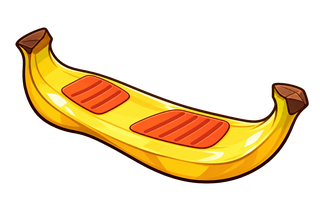

✦
香蕉踩香蕉
正在準備角色與場地…
0 / 10
重新載入
↝
香蕉踩香蕉
BANANA HOP / SURVIVE THE PEEL
120 秒・香蕉生存戰
♪
音量
100%
?
SMALL BANANA. BIG TROUBLE.
跳起來，別變成香蕉皮。
LOCAL ARCADE
01
你的香蕉
02:00
存活倒數
腐蕉法師
踩扁香蕉
000
Ⅱ
腐蕉大法師
PEEL FIELD
／
小心腳下
v1.2.1
✦
THE FLOOR IS BANANA.
香蕉
踩
香蕉
你也是香蕉。跳踩同類，閃開香蕉皮。
在這場水果混戰裡，撐過 120 秒，再挑戰腐蕉法師！
01 / 跳踩
踩熟香蕉，自動彈起連段
02 / 閃避
香蕉皮會滑倒，榴槤不能踩
03 / 衝刺
集氣衝刺；撿滑板可衝浪
開始方式
正常開始
直接魔王戰
除錯起點
正常開始
剩餘 62 秒
剩餘 32 秒
剩餘 12 秒
直接魔王戰
魔王剩 5 血（半血儀式）
魔王剩 2 血（分身階段）
無敵模式
開始蹦跳
↗
WASD 移動 · SPACE 跳躍 · J 衝刺 · K 蕉皮衝浪
衝浪
2.0s

衝浪
×0
K
↝
衝刺
↑
跳踩
A LITTLE CHAOS. A LOT OF BANANAS.
單人遊戲 / 120s
↻
請將手機轉為橫向遊玩
進入全螢幕